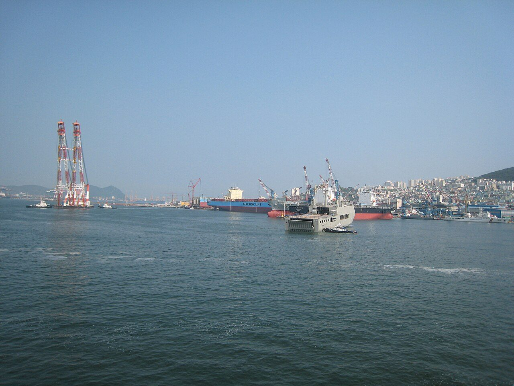
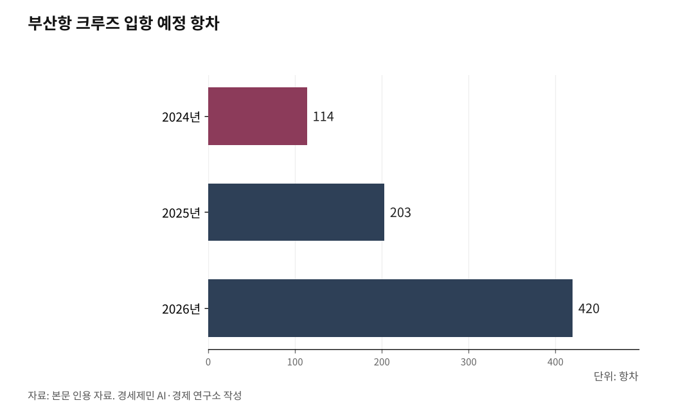

[인천 해양산업, 생존의 기로㉕·終] 2026년 가을 해수부 균형 네트워크 용역 결과 발표
부산 4조8882억 vs 인천 920억, 6배 격차에서 시작된 시리즈의 종합
경인경제권 2600만명, 정책 거점·인력 양성·산업 거점·항만 권한 부재
인천시의회 결의안·항만법 개정안·지방일괄이양법, 하반기에 모인다
[인천 해양산업, 생존의 기로] 시리즈가 24편으로 마침표를 찍는다. 본편 24편과 번외 2편에 걸쳐 인천 해양산업 구조와 격차, 자산과 공백, 정책과 거버넌스를 정리했다.

해양수산부가 부산으로 옮긴 지 5개월이 지났다. 종합편은 시리즈가 다룬 내용을 5극3특·해양분권·환황해 경제권 세 축으로 정리한다. 2026년 4월 20일 해수부가 발주한 '부산 이전에 따른 지역 밀착 및 전국 균형 네트워크 구축 전략 연구' 결과가 2026년 가을 발표를 앞둔 시점에 인천 해양 거버넌스 흐름을 짚는다.
1. 5극3특, 경인경제권 2600만명의 해양 공백
경인경제권 2600만명에는 해양 정책 거점과 연구기관, 해양대가 없다. 부산은 한국해양수산개발원(KMI, Korea Maritime Institute)·한국해양과학기술원(KIOST, Korea Institute of Ocean Science and Technology)·국립수산과학원·한국해양대·한국선급(KR, Korean Register)·한국해양진흥공사(KOBC, Korea Ocean Business Corporation)·해양수산인재개발원·국립해양박물관을 갖췄다. 인천에는 이 가운데 하나도 없다.
부산은 동삼혁신지구에 사업비 322억원으로 해양과학기술 산학연 협력센터를 2025년 말 준공해 2026년 7월 개관한다. 인천은 인천해양항만수산진흥원 또는 인천해양산학융합센터 설립 타당성 연구용역 단계에 머물렀다.

2. 해양분권, 인천항 권한이 인천에 없다
인천항 권한은 인천에 없다. 항만시설 공사 인허가와 공유수면 매립·사용 허가, 준설토 투기 같은 항만 개발·운영 핵심 권한은 해양수산부와 인천지방해양수산청이 쥐고 있다. 인천항만공사가 부두를 임대·운영하지만 관리·감독권은 해수부 소관이다.
인천시는 도시계획 권한만 가졌다. 한 항만에 세 기관이 권한을 나눠 쥔 구조다.
제주특별자치도는 2006년 7월 1일 출범과 함께 제주지방해양수산청 권한 가운데 해상운송과 보안을 제외한 대부분을 이양받았다. 인천은 일반 광역시이자 인천항이 국가 관리 무역항이다. 박창호 인천시의원(국민의힘 비례)은 경인방송 인터뷰에서 "특별시만 이양되고 일반 시·도는 안 되는 건 형평성에 어긋난다"고 말했다.
함부르크는 시 산하 함부르크 항만청(Hamburg Port Authority, HPA)이 항만 인프라 계획·구축, 항만철도 시설 관리, 선박 교통 안전 권한을 직접 행사한다. 함부르크항 컨테이너 물동량은 2023년 770만TEU(Twenty-foot Equivalent Unit, 20피트 컨테이너 기준)다.
3. 환황해 경제권, Sea-Air-Rail 한 도시 집적
인천에는 복합물류 자산이 한 도시에 모여 있다. 인천항 한중 정기 카페리 10개 항로, 2024년 인천항 컨테이너 물동량 355만8455TEU, 인천공항 2024년 국제선 화물 290만6067톤(홍콩·상하이 다음 세계 3위)이 인천 한 도시에 있다. 대한민국에서 항만(Sea)·공항(Air)·철도(Rail) 3대 수송방식이 한 도시에 모인 곳은 인천뿐이다.
인천 해양수산 산·학·연 거점 조성 타당성 및 기본계획 수립 보고서는 부산항이 환태평양·유럽 해운의 관문이라면 인천항은 RCEP(Regional Comprehensive Economic Partnership, 역내포괄적경제동반자협정) 15개국과 중앙아시아의 관문이라고 정리했다.
4. 송도에 모인 자산, 다섯 갈래로 비는 공백
기관 자산은 송도에 모였다. 해양경찰청 본청, 2028년 3월 개원 예정 해사국제상사법원(이하 해사법원), UNCITRAL(United Nations Commission on International Trade Law, 유엔국제상거래법위원회) 아시아태평양지역센터가 송도에 있다.
인프라 자산은 6.2GW 해상풍력, 서해안 HVDC(High Voltage Direct Current, 초고압직류송전) 620km 8GW의 최종 도착지, 신송도 변전소(2028년 준공 예정)다. 인천 갯벌은 728.3㎢로 전국 갯벌의 29.3%, 인천 섬은 192개(유인 40개·무인 152개)다.
대학 자산은 인하대 법학전문대학원(2009년 개원, 전임교원 31명), 물류전문대학원(2006년 교육부 인가), 해양과학과, AI융합혁신대학원이다. 인하대는 2025년 6월 BEACON(Blue-tech Education for Advanced Coastal & Ocean Network) 사업에 착수해 사업비 125억원·5년 과정으로 해양 인력 133명을 키우고 있다.
공백은 다섯 갈래다. 첫째, 정책 거점이 없다. KMI 분원도, KIOST 분원도, 국립수산과학원 본원 분원도 인천에는 없다.
둘째, 인력 양성 거점이 없다. 해양대학이 없고, 해사법원 개원 2년을 앞두고도 해사법 석사·박사 과정이 인천에 없다. 인천 해경 간부가 부산 한국해양대까지 가서 공부한다.
셋째, 산업 거점이 없다. 한국조선해양기자재연구원(KOMERI) 분원, 함정 정비창, 해양산학융합센터가 인천에 없다. 해양경찰정비창은 부산 사하구 다대포에 단독으로 있어 인천해양경찰서와 서해5도특별경비단 함정이 부산까지 가서 정기수리를 받는다.
넷째, 위판 데이터 단일 거점이 없다. 인천 위판은 인천·경인서부·경인북부·영흥·경기 5개 수협으로 갈라져 있다. 다섯째, 항만 권한이 인천에 없다.
5. 부산 가속, 6배 예산 격차
부산 해양 사업이 다층으로 진행됐다. 해수부 2026년도 항만 인프라 확충 예산 1조6600억원 가운데 부산지역이 5382억원, 인천지역이 920억원이다. 약 6배 격차다.
부산시는 해수부 이전과 함께 '경제성장 혁신전략'으로 4조8882억원 규모 71개 사업을 추진한다. 해양-미래기술 융합에 1조9270억원, 해양 AI 대전환 웨이브(WAVE, World class AI Value for Ocean Economy) 프로젝트에 1조1100억원이다.
2025년 11월 27일 '부산 해양수도 이전기관 지원에 관한 특별법안'이 국회 본회의를 통과했다. 재석 256명 중 찬성 255명, 반대 1명이다. 법안 이름에 '해양수도 부산'이 명문화됐다.
2026년 1월 부산항만공사는 '부산항 AI(Artificial Intelligence, 인공지능) 대전환의 원년'을 선포했다. 부산항 신항 7부두는 2024년 4월 5일 국내 첫 완전자동화 컨테이너터미널로 개장했다. 부산항 크루즈 입항 예정 항차는 2024년 114항차, 2025년 203항차, 2026년 420항차로 늘었다.
부산공동어시장 현대화는 사업비 2422억원으로 2025년 12월 19일 착공해 2029년 말 준공한다. 스마트양식 클러스터는 부산·전남·강원·경북·제주 5개소에 1950억원이 들어갔다. 인천은 1차부터 6차까지 어디에도 들지 못했다.
함정 MRO 글로벌 경쟁력 강화 지원 공모사업은 경남·부산·울산·전남 4개 시·도가 2026년 공동 신청했다. 인천·평택은 빠졌다. 인천 시간표를 보면 2028년 3월 해사법원 개원, 2030년 해상풍력 6.2GW 1단계 상업운전이 앞에 있다.
6. 2026년 하반기, 권한 이양 절차 네 가지가 모인다
2026년 하반기에 권한 이양과 관련된 네 가지 절차가 같은 시점에 진행된다.
첫째, 인천시의회 결의안이다. 인천시의회 건설교통위원회는 2026년 1월 30일 '인천지방해양수산청 및 인천항만공사 관리·감독권 등 단계적 이관 촉구 결의안'을 원안가결했다. 시의회는 2월 12일 제306회 임시회 본회의에서 결의안을 의결했다.
둘째, 항만법 개정안이다. 인천 지역 여·야 국회의원은 인천시와 협의해 2026년 상반기 항만법 개정안을 공동 발의할 예정이다. 이양 대상은 항만시설 공사 인허가, 공유수면 매립·사용 허가, 준설토 투기다.
제주·세종 특별자치시도에만 부여한 특례를 해양 분야에 한정해 일반 광역시 인천에도 적용하는 방식이다.
셋째, 해수부 균형 네트워크 용역이다. 해양수산부는 2026년 4월 20일 '부산 이전에 따른 지역 밀착 및 전국 균형 네트워크 구축 전략 연구'를 긴급 발주했다. 사업금액 7000만원, 사업기간 계약일부터 6개월이다.
결과 발표 시점은 2026년 가을이다. 5개 과업 중 과업 4는 전국 11개 지방해양수산청 조직·기능·권한 적정성 검토를 명시했다.
발주처는 해양수산부이며, 용역 명칭은 '균형 네트워크 구축'으로 권한 이양보다 기능 재배치에 가까운 표현이다. 사업금액과 사업기간을 보면 11개 지방해양수산청 권한 재배치를 결정하는 단계가 아니라 검토 단계에 해당한다.
넷째, 지방일괄이양법이다. 2026년 12월 제정 예정이다. 해수부 소관 항만 사무 가운데 지방관리 무역항과 연안항 중심 권한이 지자체로 이양된다.
인천항은 국가 관리 무역항이라 지방일괄이양법에서 빠진다. 항만법 개정이 인천 권한 이양의 별도 통로다.
7. 분산 20년, 통계로 본 결과
노무현 정부는 공공기관 175개 이전 계획을 세워 2019년까지 153개 이전을 완료했다. 시리즈 ⑤편이 인용한 통계청 자료를 보면 경인경제권 인구 비중은 2000년 46.3%에서 2023년 50.4%로 늘었다. 지방소멸위험지역은 지자체 228곳 중 113곳(49.6%)이다.
박주봉 인천상공회의소 회장은 인천투데이 인터뷰에서 "인천항은 경인경제권 시민 2600만명의 생활 물류를 책임지는 핵심 거점이고 지역경제 생산 유발액은 연간 38조원에 이르는 것으로 추산된다"며 "균형 잡힌 항만 정책과 기능별 역할 분담이 필요하다"고 말했다.
함부르크 항만청(HPA)은 항만 인프라 계획과 구축, 항만철도 시설 관리, 선박 교통 안전 권한을 함부르크시가 직접 행사한다. 로테르담항은 2004년 시정부 부서에서 공기업으로 전환했고 로테르담시가 약 70%, 네덜란드 정부가 약 30% 지분을 가졌다.
제주는 2006년 7월 1일 출범과 함께 제주지방해양수산청 권한 가운데 해상운송과 보안을 제외한 대부분을 이양받았다. 시리즈 ⑤편에서 정리한 해외 분권 모델과 국내 제주 사례는 권한과 예산을 지방이 직접 행사하는 구조다.
8. 6.3 지방선거와 차기 인천시장 임기 첫 6개월
인천 앞에 놓인 일정은 다층이다. 2026년 6월 3일 지방선거와 차기 인천시장 취임(7월 1일), 2026년 가을 해수부 균형 네트워크 용역 결과 발표가 이어진다. 2026년 하반기 항만법 개정안 국회 발의, 2026년 12월 지방일괄이양법 제정 예정, 2028년 3월 해사법원 개원, 2030년 해상풍력 6.2GW 1단계 상업운전이 그 뒤를 잇는다.
차기 인천시장 임기 첫 6개월(2026.7.1~12.31)은 권한 이양 네 절차와 같은 시점에 진행된다. 인천시 해양산업 육성 조례 정비, 인천시 해양 분야 조직 개편, 인천시 자체 사업비 협의가 이 시기에 결정된다.
박찬대 후보(더불어민주당)는 인천항만공사 본사 송도에서 제물포구 이전을, 유정복 후보(국민의힘)는 '인천국제자유특별시' 구상에 인천지방해양수산청과 인천중소벤처기업청 이관을 공약했다. 여·야 인천시장 후보가 인천지방해양수산청과 인천항만공사 권한 지자체 이양을 공통 공약으로 내건 첫 사례다.
한편, 두 후보 모두 해양 공약을 핵심 의제로 내건 가운데 경인일보가 한국갤럽조사연구소에 의뢰해 2026년 5월 23일과 24일 인천시 거주 18세 이상 1002명을 대상으로 실시한 여론조사에서 박찬대 후보 49%, 유정복 후보 34%, 이기붕 후보 1%가 나왔다. 표본오차는 95% 신뢰수준에서 ±3.1%포인트, 응답률 12.5%다.
9. 권한 이양 후속, 인천 점검 항목
인천항이 국가 관리 무역항이라 권한 이양은 인천시 결정만으로 진행되지 않는다. 항만법 개정안 통과와 후속 시행령 정비, 사업비 매칭, 인천해양항만수산진흥원 또는 인천해양산학융합센터 사업비 협의는 해수부와 기획재정부의 협력 사항이다.
지방일괄이양법은 국무조정실과 행정안전부 소관이며, 해사법원 개원 후속 행정·인력 지원은 법원행정처와 법무부 협력 사항이다.
인천시 해양산업 육성 조례에 해양산학융합센터(또는 인천해양항만수산진흥원) 설치 근거 조항이 들어가는지가 첫 점검 항목이다. 인천지방해양수산청·인천항만공사에서 이양받을 권한을 행사할 인천시 안 실무 조직 정비가 두 번째 점검 항목이다.
해사법원 개원 시점에 맞춘 해사법·해운물류·해양AI 전문인력 양성 체계가 인하대 해양전문대학원 또는 통합 국립해양대 인천캠퍼스로 이어지는 흐름이 세 번째 점검 항목이다. 항만시설 인허가·공유수면 매립 허가·준설토 투기 권한 행사 행정 시스템 마련이 네 번째 점검 항목이다.
부산은 환태평양·유럽 해운의 관문, 인천은 RCEP 15개국과 중앙아시아의 관문, 유럽 항공화물은 인천공항이 담당한다. P1 용역 결과보고서는 인천과 부산을 제로섬 경쟁이 아닌 권역별 관문 기능 분담으로 정리했다.
[인천 해양산업, 생존의 기로] 시리즈가 24편으로 정리한 내용은 여기까지다. 6.3 지방선거와 균형 네트워크 용역 결과 발표, 항만법 개정안과 지방일괄이양법이 2026년 하반기에 진행되며, 인천시·해수부·국토교통부·기획재정부·국무조정실·행정안전부·법원행정처의 협력 위에 다음 단계가 결정된다.
[연구윤리 공시] 본 기사는 인천 해양수산 산·학·연 거점 조성 타당성 및 기본계획 수립(2026.3) 용역에 참여한 연구자가 작성했다. 동 용역의 분석을 본 기사 일부에 인용했다. 동 용역 발주처는 인천광역시이며, 본 기사 작성에 발주처의 관여는 없었다.
※ 이 기사는 AI 프로그램 클로드를 활용해 작성했습니다.
참고문헌
·인하대학교 경기인천씨그랜트센터(2026), 『인천 해양수산 산·학·연 거점 조성 타당성 및 기본계획 수립』, 인천광역시 발주. 온라인 URL 없음.
·해양수산부(2026), "해양수산부 부산 이전에 따른 지역 밀착 및 전국 균형 네트워크 구축 전략 연구(긴급공고)", 해양수산부 공고 제2026-854호, 2026.4.20. https://www.g2b.go.kr
·인천시의회 건설교통위원회(2026), "인천지방해양수산청 및 인천항만공사 관리·감독권 등 단계적 이관 촉구 결의안", 제306회 임시회, 2026.1.30. 원안가결, 2026.2.12. 본회의 가결. https://www.icouncil.go.kr
·해양수산부(2025), "2026년도 해양수산부 예산 7조3566억원 확정", 해양수산부 보도자료, 2025.12.5. https://www.mof.go.kr
·인천항만공사(2025), "인천항, 2024년 컨테이너 물동량 역대 최대기록 경신", 인천항만공사 보도자료, 2025.1.2. https://www.icpa.or.kr
·인천국제공항공사(2025), "인천공항공사, 개항 이후 최초로 국제여객순위 세계 3위 달성", 인천국제공항공사 보도자료, 2025.4.21. https://www.airport.kr
·이종선(2025), "부산항 5400억 vs 인천항 920억…해수부 이전 예산 쏠림 심각", 『인천투데이』, 2025.9.3. https://www.incheontoday.com/news/articleView.html?idxno=307720
·김도윤(2025), "박주봉 인천상의 회장 인천항 국가 물류체계 거점…균형 있는 항만 정책 필요", 『인천투데이』, 2025.7.7. https://www.incheontoday.com
·"항만법 개정에 결의안까지…인천 항만 자치권 얻을까", 『경인방송』, 2026.1.30. https://news.ifm.kr/news/articleView.html?idxno=463699
·"[6·3 지방선거] 유정복 인천시장 후보, 인천국제자유특별시로 제3개항 선언", 『아주경제』, 2026.5.7. https://www.ajunews.com/view/20260507112731568
·"인천항만공사는 제물포구로, 송도에는 글로벌 AI 허브 유치 민주당 공통 공약 발표", 『경인일보』, 2026.5.19. https://www.kyeongin.com/article/1763879
·"인천시장 박찬대 49% vs 유정복 34% 전권역 앞서 경인일보-한국갤럽 여론조사", 『경인일보』, 2026.5.25. https://www.kyeongin.com/article/1764194
사진 출처
· [대표사진] Syced, "Busan ferry terminal 15.jpg", 위키미디어 공용, CC0, https://commons.wikimedia.org/wiki/File:Busan_ferry_terminal_15.jpg
※ 이 기사는 인공지능을 활용해 작성했습니다.
관련기사
- [인천 해양산업, 생존의 기로㉔] 6.3 선거 일주일 앞, 인천 해양 자치권 시험대
- [인천해양산업, 생존기로㉓] 인천항 크루즈 1월 64항차서 3월 133항차, 모항 도시 전환 갈림길
- 부산엔 스마트양식 1950억·어시장 2422억, 인천엔 데이터 거점도 없다
- [인천해양산업, 생존기로㉑] 부산항 7부두 포트 4.0, 인천항도 피할 수 없다
저작권자 © AI경세제민 무단전재 및 재배포, AI학습 및 활용 금지